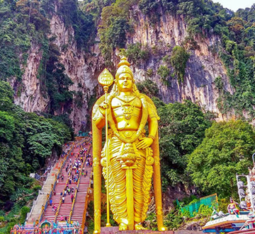
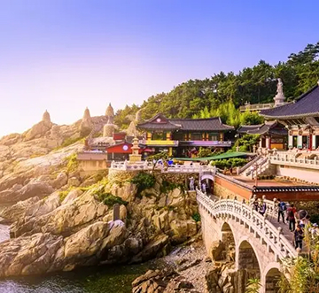

<section class="travel-popular" id="travel-popular">
  <div class="container">
    <div class="travel-popular__wrapper">
      <h2 class="title-2">Популярное места</h2>

      <p class="text">Путешествия играли главную роль в жизни каждого из нас. Люди годами жили как скитальцы, первооткрывателями и странниками, переезжая с острова на остров, накапливая бесценный опыт и наполняя жизнь незабываемыми воспоминаниями.</p>

      <div class="travel-popular__cards">
        <!-- CARD N1 -->
        <card class="card">
          

          <div class="card__content-wrapper">
            <h3 class="title-3">Стамбул, Турция</h3>
            <p>Стамбул — крупный город Турции, расположенный на стыке Европы.</p>
          </div>
        </card>

        <!-- CARD N2 -->
        <card class="card card--shadow">
          

          <div class="card__content-wrapper">
            <h3 class="title-3">Куала-Лумпур, Малайзия</h3>
            <p>Путь длиной в 272 шага приведет вас в это столетие.</p>
          </div>
        </card>

        <!-- CARD N3 -->
        <card class="card">
          

          <div class="card__content-wrapper">
            <h3 class="title-3">Сеул, Южная Корея</h3>
            <p>Южная Корея — государство в Восточной Азии.</p>
          </div>
        </card>
      </div>
    </div>
  </div>
</section>
